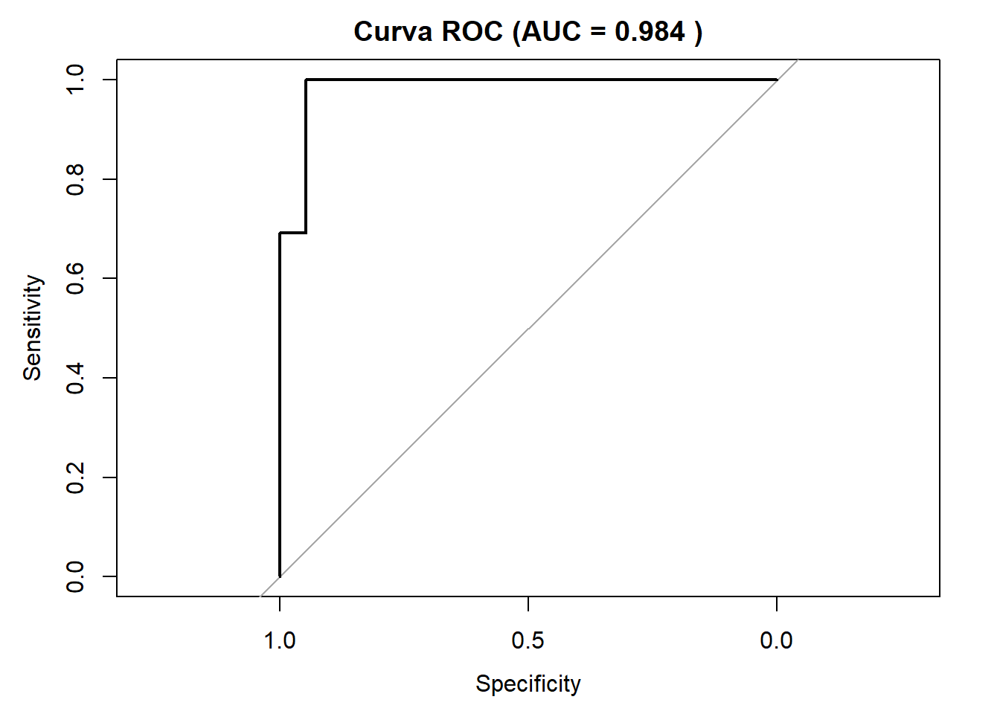

modelo_logistico <- glm(am ~ wt + hp, data = mtcars, family = binomial)5 Modelos de Regresión Generalizada
5.1 Ejercicio 1: Conceptual (Fundamentos de GLM)
Explica los tres componentes clave que definen a cualquier Modelo Lineal Generalizado (GLM) y describe brevemente la función de cada uno.
Los tres componentes clave de un GLM son:
Componente aleatorio: Especifica la distribución de probabilidad de la variable respuesta (Normal, Binomial, Poisson, etc.). Define cómo se distribuyen los errores.
Componente sistemático: Define el predictor lineal \(\eta = \beta_0 + \beta_1 X_1 + ... + \beta_p X_p\). Es la parte lineal del modelo.
Función de enlace: Conecta la media de la distribución (\(\mu\)) con el predictor lineal: \(g(\mu) = \eta\). Permite que el predictor lineal tenga rango completo mientras la media respeta las restricciones de la distribución.
5.2 Ejercicio 2: Conceptual (Función de Enlace)
¿Cuál es el propósito fundamental de la función de enlace en un GLM? ¿Por qué la regresión lineal clásica es considerada un caso particular de un GLM? (Pista: piensa en su función de enlace).
Propósito de la función de enlace:
Transformar la media de la variable respuesta para que pueda ser modelada como una combinación lineal de los predictores, respetando las restricciones del dominio de la variable respuesta.
Regresión lineal como caso particular:
La regresión lineal clásica es un GLM con: - Distribución: Normal - Función de enlace: Identidad (\(g(\mu) = \mu\)) - Por tanto: \(\mu = \beta_0 + \beta_1 X_1 + ... + \beta_p X_p\)
5.3 Ejercicio 3: Práctico (Ajuste de un Modelo Logístico)
Usa el conjunto de datos mtcars de R. La variable am indica si la transmisión de un coche es automática (0) o manual (1).
- Ajusta un modelo de regresión logística para predecir la probabilidad de que una transmisión sea manual (
am) en función del peso del coche (wt) y los caballos de fuerza (hp). - Utiliza la función
summary()para examinar el modelo. ¿Qué variables parecen ser significativas? - Obtén los coeficientes del modelo. ¿Cómo interpretarías el signo del coeficiente para la variable
wt?
a) Ajustar modelo logístico:
b) Summary del modelo:
summary(modelo_logistico)
Call:
glm(formula = am ~ wt + hp, family = binomial, data = mtcars)
Coefficients:
Estimate Std. Error z value Pr(>|z|)
(Intercept) 18.86630 7.44356 2.535 0.01126 *
wt -8.08348 3.06868 -2.634 0.00843 **
hp 0.03626 0.01773 2.044 0.04091 *
---
Signif. codes: 0 '***' 0.001 '**' 0.01 '*' 0.05 '.' 0.1 ' ' 1
(Dispersion parameter for binomial family taken to be 1)
Null deviance: 43.230 on 31 degrees of freedom
Residual deviance: 10.059 on 29 degrees of freedom
AIC: 16.059
Number of Fisher Scoring iterations: 8b) Variables significativas: Basándose en los p-valores, identificar qué variables tienen p < 0.05.
c) Interpretación del signo de wt: Si el coeficiente de wt es negativo, significa que coches más pesados tienen menor probabilidad de tener transmisión manual (lo cual es intuitivo).
5.4 Ejercicio 4: Interpretación (Odds Ratios)
Basado en el modelo del ejercicio anterior:
- Calcula el Odds Ratio (OR) para el coeficiente de la variable
hp. - Interpreta este Odds Ratio en el contexto del problema. Específicamente, ¿cómo cambian las “odds” (la razón de probabilidad) de tener una transmisión manual por cada caballo de fuerza adicional, manteniendo el peso constante?
a) Calcular Odds Ratio para hp:
coef_hp <- coef(modelo_logistico)["hp"]
odds_ratio_hp <- exp(coef_hp)
print(paste("Odds Ratio para hp:", round(odds_ratio_hp, 4)))[1] "Odds Ratio para hp: 1.0369"# Para todos los coeficientes
odds_ratios <- exp(coef(modelo_logistico))
print("Todos los Odds Ratios:")[1] "Todos los Odds Ratios:"print(odds_ratios) (Intercept) wt hp
1.561455e+08 3.085967e-04 1.036921e+00 b) Interpretación: El Odds Ratio para hp es 1.0369. Esto significa que por cada caballo de fuerza adicional, las odds (la razón de probabilidad) de que un coche tenga transmisión manual se multiplican por 1.0369 (es decir, aumentan aproximadamente un 3.7%), manteniendo constante el peso del coche.
5.5 Ejercicio 5: Práctico (Validación del Modelo Logístico)
Continuando con el modelo logístico de mtcars:
- Genera las predicciones de probabilidad del modelo para los datos.
- Convierte estas probabilidades en clases (“0” o “1”) usando un umbral de decisión de 0.5.
- Crea la matriz de confusión comparando las predicciones con los valores reales.
- Calcula la precisión (accuracy) global del modelo.
- (Bonus) Utiliza el paquete
pROCpara calcular y visualizar la curva ROC y obtener el valor del AUC. ¿Qué tan buena es la capacidad discriminativa del modelo?
a) Predicciones de probabilidad:
probabilidades <- predict(modelo_logistico, type = "response")b) Conversión a clases con umbral 0.5:
predicciones_clase <- ifelse(probabilidades > 0.5, 1, 0)c) Matriz de confusión:
tabla_confusion <- table(Predicho = predicciones_clase, Real = mtcars$am)
print("Matriz de Confusión:")[1] "Matriz de Confusión:"print(tabla_confusion) Real
Predicho 0 1
0 18 1
1 1 12d) Cálculo de precisión:
precision <- sum(diag(tabla_confusion)) / sum(tabla_confusion)
print(paste("Precisión (Accuracy):", round(precision, 3)))[1] "Precisión (Accuracy): 0.938"e) Curva ROC y AUC:
library(pROC)Type 'citation("pROC")' for a citation.
Attaching package: 'pROC'The following objects are masked from 'package:stats':
cov, smooth, varroc_obj <- roc(mtcars$am, probabilidades)Setting levels: control = 0, case = 1Setting direction: controls < casesauc_value <- auc(roc_obj)
plot(roc_obj, main = paste("Curva ROC (AUC =", round(auc_value, 3), ")"))
print(paste("AUC:", round(auc_value, 3)))[1] "AUC: 0.984"Interpretación AUC:
- AUC > 0.8: Buena capacidad discriminativa
- AUC > 0.9: Excelente capacidad discriminativa
- AUC = 0.5: Sin capacidad discriminativa (azar)
5.6 Ejercicio 6: Conceptual (Regresión de Poisson)
- ¿Qué tipo de variable respuesta está diseñada para modelar la regresión de Poisson?
- ¿Cuál es el supuesto fundamental de la distribución de Poisson respecto a la relación entre la media y la varianza?
- ¿Cómo se llama el problema que surge cuando este supuesto se viola y la varianza es mayor que la media?
a) Tipo de variable respuesta: La regresión de Poisson está diseñada para variables de conteo: enteros no negativos que representan el número de ocurrencias de un evento en un período o espacio fijo.
b) Supuesto fundamental: En la distribución de Poisson, la media es igual a la varianza: \(E[Y] = Var[Y] = \mu\).
c) Problema cuando se viola: Cuando \(Var[Y] > E[Y]\), se llama sobredispersión. Esto puede llevar a errores estándar subestimados y conclusiones incorrectas sobre la significancia.
5.7 Ejercicio 7: Práctico (Ajuste de un Modelo de Poisson)
El dataset discoveries de R es una serie temporal que cuenta el número de “grandes inventos” por año.
- Crea un gráfico de la serie temporal. ¿Parece la media del conteo constante a lo largo del tiempo?
- Ajusta un modelo de regresión de Poisson simple donde
discoverieses la respuesta y el tiempo (time(discoveries)) es el predictor. - Interpreta el coeficiente del tiempo. (Pista: recuerda exponenciarlo para obtener el Incidence Rate Ratio - IRR).
# Usar dataset discoveries
data(discoveries)a) Gráfico de la serie temporal:
plot(discoveries, main = "Grandes Inventos por Año",
ylab = "Número de Descubrimientos", xlab = "Año")
b) Ajustar modelo de Poisson:
# Crear data frame con tiempo
df_discoveries <- data.frame(
count = as.numeric(discoveries),
time = as.numeric(time(discoveries))
)
modelo_poisson <- glm(count ~ time, data = df_discoveries, family = poisson)
summary(modelo_poisson)
Call:
glm(formula = count ~ time, family = poisson, data = df_discoveries)
Coefficients:
Estimate Std. Error z value Pr(>|z|)
(Intercept) 11.354807 3.775677 3.007 0.00264 **
time -0.005360 0.001982 -2.705 0.00683 **
---
Signif. codes: 0 '***' 0.001 '**' 0.01 '*' 0.05 '.' 0.1 ' ' 1
(Dispersion parameter for poisson family taken to be 1)
Null deviance: 164.68 on 99 degrees of freedom
Residual deviance: 157.32 on 98 degrees of freedom
AIC: 430.32
Number of Fisher Scoring iterations: 5c) Interpretación del coeficiente de tiempo:
# IRR (Incidence Rate Ratio)
coef_time <- coef(modelo_poisson)["time"]
irr <- exp(coef_time)
print(paste("IRR para tiempo:", round(irr, 6)))[1] "IRR para tiempo: 0.994654"El IRR para el tiempo es 0.994654. Esto significa que por cada año que pasa, se espera que la tasa de grandes inventos se multiplique por 0.994654, lo que representa una disminución anual de aproximadamente 0.53% (calculado como 1 - 0.994654).
5.8 Ejercicio 8: Diagnóstico (Sobredispersión)
- Para el modelo de Poisson del ejercicio anterior, calcula el estadístico de dispersión (\(\hat{\phi}\)). (Pista: \(\hat{\phi} = \frac{\sum r_i^2}{n-p}\), donde los \(r_i\) son los residuos Pearson).
- Basándote en el valor de \(\hat{\phi}\), ¿hay evidencia de sobredispersión?
- Si encuentras sobredispersión, ¿cuál es el modelo alternativo que proponen los apuntes? ¿Qué ventaja teórica ofrece este modelo alternativo?
a) Calcular estadístico de dispersión:
residuos_pearson <- residuals(modelo_poisson, type = "pearson")
n <- nrow(df_discoveries)
p <- length(coef(modelo_poisson))
phi_hat <- sum(residuos_pearson^2) / (n - p)
print(paste("Estadístico de dispersión (φ̂):", round(phi_hat, 3)))[1] "Estadístico de dispersión (φ̂): 1.541"b) Evidencia de sobredispersión: Si φ̂ > 1, hay evidencia de sobredispersión. Valores > 1.5 indican sobredispersión considerable.
c) Modelo alternativo: Si hay sobredispersión, se puede usar regresión Binomial Negativa, que incluye un parámetro adicional que permite que la varianza sea mayor que la media: \(Var[Y] = \mu + \alpha\mu^2\).
# Ajuste con binomial negativa si hay sobredispersión
if(phi_hat > 1.5) {
library(MASS)
modelo_nb <- glm.nb(count ~ time, data = df_discoveries)
print("Modelo Binomial Negativo ajustado:")
print(summary(modelo_nb))
}[1] "Modelo Binomial Negativo ajustado:"
Call:
glm.nb(formula = count ~ time, data = df_discoveries, init.theta = 6.214857583,
link = log)
Coefficients:
Estimate Std. Error z value Pr(>|z|)
(Intercept) 12.254546 4.628240 2.648 0.0081 **
time -0.005832 0.002428 -2.402 0.0163 *
---
Signif. codes: 0 '***' 0.001 '**' 0.01 '*' 0.05 '.' 0.1 ' ' 1
(Dispersion parameter for Negative Binomial(6.2149) family taken to be 1)
Null deviance: 114.04 on 99 degrees of freedom
Residual deviance: 108.69 on 98 degrees of freedom
AIC: 422.34
Number of Fisher Scoring iterations: 1
Theta: 6.21
Std. Err.: 2.67
2 x log-likelihood: -416.34 5.9 Ejercicio 9: Conceptual (Deviance)
La deviance es la medida principal de bondad de ajuste en los GLM. Explica conceptualmente qué mide. ¿Cómo se utiliza la diferencia en deviance entre dos modelos anidados para decidir cuál es mejor?
Deviance mide qué tan bien el modelo ajustado se compara con el modelo saturado (perfecto). Es análogo a la suma de cuadrados residuales en regresión lineal.
Fórmula: \(D = 2[L(\text{modelo saturado}) - L(\text{modelo ajustado})]\)
Uso para comparar modelos anidados: La diferencia en deviance entre dos modelos anidados sigue una distribución χ² con grados de libertad igual a la diferencia en número de parámetros. Si esta diferencia es significativa, el modelo más complejo es preferible.
5.10 Ejercicio 10: Elección del Modelo Adecuado
Para cada uno de los siguientes escenarios, indica qué tipo de GLM (Logístico, Poisson, Binomial Negativo, Gamma…) sería el más apropiado y por qué.
- Quieres modelar el tiempo (en minutos) que tarda un cliente en resolver una consulta en un centro de atención telefónica. El tiempo es siempre positivo y muchos valores se agrupan en tiempos cortos, con una cola larga de tiempos muy largos.
- Quieres predecir la presencia o ausencia de una especie de planta en diferentes parcelas de un bosque.
- Quieres modelar el número de visitas que cada usuario hace a una página web en un mes. Observas que la varianza del número de visitas es mucho mayor que la media.
a) Tiempo de resolución de consultas: Modelo Gamma sería más apropiado porque:
- La variable es continua y positiva
- Típicamente tiene distribución asimétrica con cola derecha larga
- La distribución Gamma es flexible para este tipo de datos
b) Presencia/ausencia de especies: Regresión Logística es la elección obvia porque:
- Variable respuesta binaria (presencia = 1, ausencia = 0)
- Queremos modelar probabilidades que están restringidas al intervalo [0,1]
c) Número de visitas con varianza mayor que la media: Regresión Binomial Negativa sería más apropiada porque:
- Variable de conteo (número de visitas)
- La sobredispersión (varianza > media) viola el supuesto de Poisson
- La binomial negativa maneja naturalmente la sobredispersión